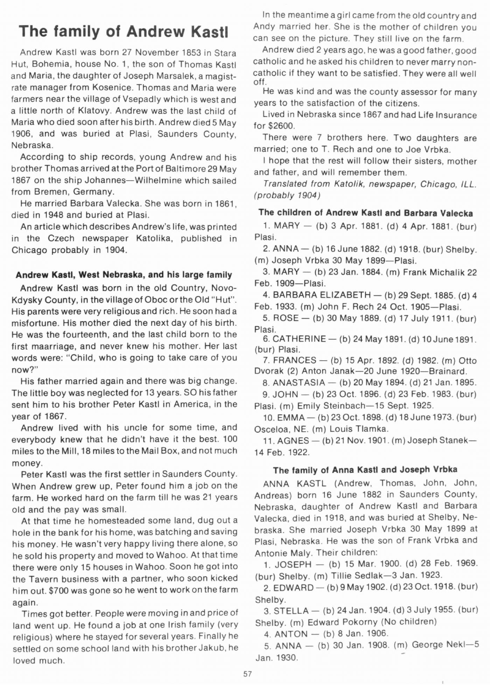

The book · The Family of Andrew Kastl
Page 57 The family of Andrew Kastl


Transcription
The family of Andrew Kastl
Andrew Kastl was born 27 November 1853 in Stara Hut, Bohemia, house No. 1, the son of Thomas Kastl and Maria, the daughter of Joseph Marsalek, a magistrate manager from Kosenice. Thomas and Maria were farmers near the village of Vsepadly which is west and a little north of Klatovy. Andrew was the last child of Maria who died soon after his birth. Andrew died 5 May 1906, and was buried at Plasi, Saunders County, Nebraska.
According to ship records, young Andrew and his brother Thomas arrived at the Port of Baltimore 29 May 1867 on the ship Johannes—Wilhelmine which sailed from Bremen, Germany.
He married Barbara Valecka. She was born in 1861, died in 1948 and buried at Plasi.
An article which describes Andrew's life, was printed in the Czech newspaper Katolika, published in Chicago probably in 1904.
Andrew Kastl, West Nebraska, and his large family
Andrew Kastl was born in the old Country, Novo-Kdysky County, in the village of Oboc or the Old "Hut". His parents were very religious and rich. He soon had a misfortune. His mother died the next day of his birth. He was the fourteenth, and the last child born to the first maarriage, and never knew his mother. Her last words were: "Child, who is going to take care of you now?"
His father married again and there was big change. The little boy was neglected for 13 years. SO his father sent him to his brother Peter Kastl in America, in the year of 1867.
Andrew lived with his uncle for some time, and everybody knew that he didn't have it the best. 100 miles to the Mill, 18 miles to the Mail Box, and not much money.
Peter Kastl was the first settler in Saunders County. When Andrew grew up, Peter found him a job on the farm. He worked hard on the farm till he was 21 years old and the pay was small.
At that time he homesteaded some land, dug out a hole in the bank for his home, was batching and saving his money. He wasn't very happy living there alone, so he sold his property and moved to Wahoo. At that time there were only 15 houses in Wahoo. Soon he got into the Tavern business with a partner, who soon kicked him out. $700 was gone so he went to work on the farm again.
Times got better. People were moving in and price of land went up. He found a job at one Irish family (very religious) where he stayed for several years. Finally he settled on some school land with his brother Jakub, he loved much.
In the meantime a girl came from the old country and Andy married her. She is the mother of children you can see on the picture. They still live on the farm.
Andrew died 2 years ago, he was a good father, good catholic and he asked his children to never marry non-catholic if they want to be satisfied. They were all well off.
He was kind and was the county assessor for many years to the satisfaction of the citizens.
Lived in Nebraska since 1867 and had Life Insurance for $2600.
There were 7 brothers here. Two daughters are married; one to T. Rech and one to Joe Vrbka.
I hope that the rest will follow their sisters, mother and father, and will remember them.
Translated from Katolik, newspaper, Chicago, ILL. (probably 1904)
The children of Andrew Kastl and Barbara Valecka
- MARY — (b) 3 Apr. 1881. (d) 4 Apr. 1881. (bur) Plasi.
- ANNA — (b) 16 June 1882. (d) 1918. (bur) Shelby. (m) Joseph Vrbka 30 May 1899—Plasi.
- MARY — (b) 23 Jan. 1884. (m) Frank Michalik 22 Feb. 1909—Plasi.
- BARBARA ELIZABETH — (b) 29 Sept. 1885. (d) 4 Feb. 1933. (m) John F. Rech 24 Oct. 1905—Plasi.
- ROSE — (b) 30 May 1889. (d) 17 July 1911. (bur) Plasi.
- CATHERINE — (b) 24 May 1891. (d) 10 June 1891. (bur) Plasi.
- FRANCES — (b) 15 Apr. 1892. (d) 1982. (m) Otto Dvorak (2) Anton Janak—20 June 1920—Brainard.
- ANASTASIA — (b) 20 May 1894. (d) 21 Jan. 1895.
- JOHN — (b) 23 Oct. 1896. (d) 23 Feb. 1983. (bur) Plasi. (m) Emily Steinbach—15 Sept. 1925.
- EMMA — (b) 23 Oct. 1898. (d) 18 June 1973. (bur) Osceloa, NE. (m) Louis Tlamka.
- AGNES — (b) 21 Nov. 1901. (m) Joseph Stanek—14 Feb. 1922.
The family of Anna Kastl and Joseph Vrbka
ANNA KASTL (Andrew, Thomas, John, John, Andreas) born 16 June 1882 in Saunders County, Nebraska, daughter of Andrew Kastl and Barbara Valecka, died in 1918, and was buried at Shelby, Nebraska. She married Joseph Vrbka 30 May 1899 at Plasi, Nebraska. He was the son of Frank Vrbka and Antonie Maly. Their children:
- JOSEPH — (b) 15 Mar. 1900. (d) 28 Feb. 1969. (bur) Shelby. (m) Tillie Sedlak—3 Jan. 1923.
- EDWARD — (b) 9 May 1902. (d) 23 Oct. 1918. (bur) Shelby.
- STELLA — (b) 24 Jan. 1904. (d) 3 July 1955. (bur) Shelby. (m) Edward Pokorny (No children)
- ANTON — (b) 8 Jan. 1906.
- ANNA — (b) 30 Jan. 1908. (m) George Nekl—5 Jan. 1930.
People from the line of descent on this page
- Maria Marsalek d. 1853
- Andrew Kastl 1853–1906
- Barbara Valecka 1861–1948
- Mary Kastl 1881–1881
- Anna Kastl 1882–1918
- Mary Kastl b. 1884
- Barbara Elizabeth Kastl 1885–1933
- Rose Kastl 1889–1911
- Catherine Kastl 1891–1891
- Frances Kastl 1892–1982
- Anastasia Kastl 1894–1895
- John Kastl 1896–1983
- Emma Kastl 1898–1973
- Agnes Kastl b. 1901
- Joseph Vrbka
- Joseph Vrbka 1900–1969
- Edward Vrbka 1902–1918
- Stella Vrbka 1904–1955
- Anton Vrbka b. 1906
- Anna Vrbka b. 1908
Transcriber’s notes
Begins a new chapter-style section (large title). Contains a translated newspaper article ('Andrew Kastl, West Nebraska, and his large family') that runs from the left column into the top of the right column; its source line is in italics. Spellings as printed: 'Johannes—Wilhelmine' (vs 'Johannes—Wilhelmina' on p.56), 'Katolika' in the intro vs 'Katolik' in the source line, 'maarriage', 'SO his father', 'Osceloa, NE.', 'ILL.'. The article calls Peter Kastl Andrew's 'brother' and then his 'uncle', as printed. Intro gives Andrew's death as 5 May 1906 while the article (probably 1904) says he died 2 years ago. 'Novo-Kdysky' hyphen kept as a real hyphen (capital K after the break). The Anna Kastl / Joseph Vrbka children list continues on the next page (items 6-10).